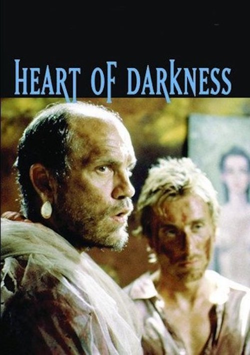

El corazón de las tinieblas (TV) (1993)
Sinopsis Rápida
Un viaje alucinante al Congo belga, donde la oscuridad de la naturaleza humana se mezcla con la opresión colonial en una adaptación visceral de la novela de Joseph Conrad.
Sinopsis Detallada
El capitán Marlow, atormentado por sus experiencias en el corazón del Congo, narra su viaje río arriba en busca del enigmático Kurtz. La película desvela la brutalidad del colonialismo, la locura, y la degradación moral a la que los seres humanos son capaces de llegar en situaciones extremas. La adaptación de Francis Ford Coppola es una obra maestra visual que se sumerge en el terror psicológico y la exploración de la propia oscuridad del alma. A través de la historia, se cuestiona el poder y la corrupción, dejando al espectador un inquietante posgusto.
¿Por qué tenés que verla?
- Una adaptación cinematográfica poderosa y visualmente impactante de una novela clásica.
- La excepcional dirección de Francis Ford Coppola crea una atmósfera claustrofóbica y opresiva.
- La película tuvo un impacto significativo en la forma de representar la opresión colonial y la psique humana.
- Marlow's viaje interior es tan cautivador como su viaje físico.
Idea Extra
Comparación entre la novela original de Conrad y la adaptación de Coppola, analizando las diferencias y la fidelidad a la obra literaria.
{{CONTENIDO_RELACIONADO}}